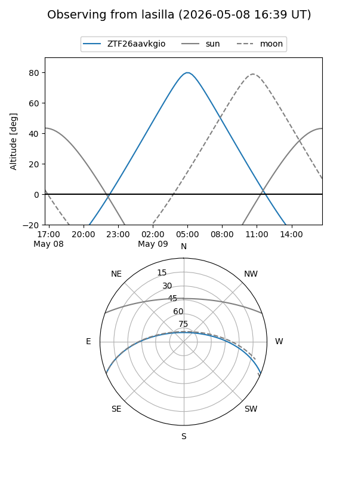
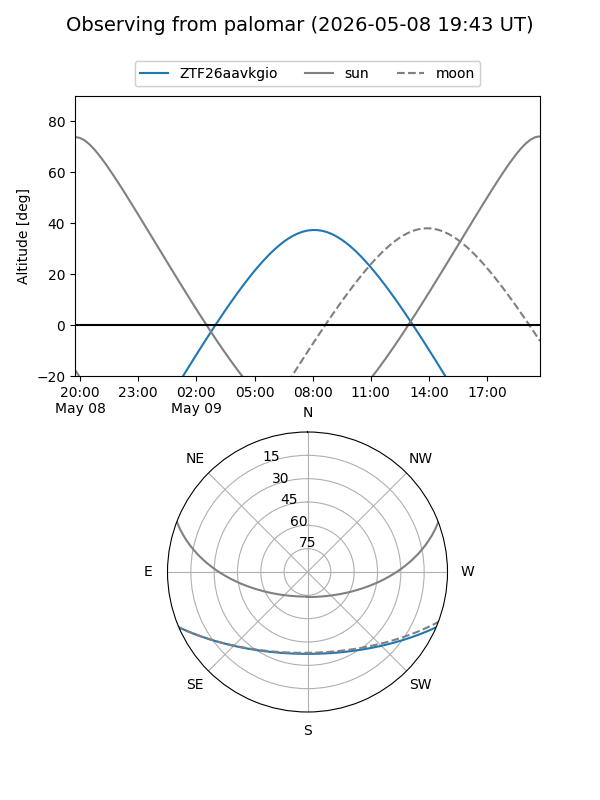

ZTF26aavkgio
Target ZTF26aavkgio at 2026-05-09 09:54
Aliases and brokers:
FINK: link
Lasair: link
ALeRCE: link
alt names
ZTF26aavkgio (ztf,fink_ztf)
Coordinates:
equatorial (ra, dec) = 231.0744,-19.18027
equatorial (HMS+DMS) = 15:24:17.85,-19:10:48.97
galactic (l, b) = (345.7402,+30.70610)
Flags:
Photometry:
last ztfg=19.55
1 ztfg detections
Lightcurve
Visibility


Additional plots